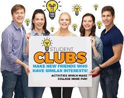

clubs

Trident Labs
Trident Labs aim to develop autonomous underwater vehicles. They aspire to start a research group in the college which develops and masters technologies and equipments in the above field. They conduct workshops for students and make projects related to automation and robotics that give a better understanding of the core subjects of electronics, computers and mechanics to the students. As the first step, they will participate in the Singapore AUV challenge.
Team Apache
Team Apache is the Efficycle team of Vishwakarma Institute of Technology. They design and fabricate a hybrid, human powered, three wheeled, electric vehicle. They participate in Efficycle competition which is organised by the Northern India Section of Society of Automotive Engineers (SAE NIS). They are ranked among the top 10 Efficycle teams in the country. The club is active since 2014.
Financial Literacy Club
The Club of Vishwakarma Institute of Technology, Pune is a student driven and faculty guided initiative for increasing the awareness in the field of Finance which involves various aspects related to Personal Finances. The objective of the club is to increase the Financial Literacy among the students and help them to achieve Financial Freedom so that they can meet their personal and financial Goals.
Mirage Campus Film Societys
It is a student driven campus film society. It is the first ever campus film society and perhaps the only one in pune. Mirage was started at VIT, Pune in the year 2009 with an aim of inculcating within the students of the college, the art of film making and appreciation for cinema.
Eksutram : The Mathematics Club of VIT
Ekasutram is a student-run and faculty guided club which caters to the maths loving population of VIT. It was an initiative taken by four students in the year 2015 to create interest about the subject and hone the mathematical skills of students.
Personality Development Club
Personality Development Club(PD Club) is a platform for expressing oneself with Competence, Culture and Character as it's basis. They conduct many principle centred seminars relevant to modern age. They also arrange technical workshops on C, JAVA, Catia, etc in college and in many IITs and NITs.
Programmer's Hub
It comprises of following two sections. 1. GCC (Group of Competitive Coders): The objective of this part of the club is to enhance coding skills, develop problem solving techniques and encourage active participation in programming contests. 2. Foobar: The objective of this part of the club is to conduct seminars and create awareness about various feilds available in computer science. They also conduct workshops to give a little hands on experience for the same.
Antariksh
Antariksh - The Astronomy Club of VIT, Pune, is a student driven and faculty guided entity encouraging astronomy enthusiasts to build their career in the field of astronomy. The objective of this club is to motivate students towards the field of astronomy by emphasizing on the opportunities for engineers in the field of astronomy through arranging guidance lectures, star gazing programmes and astrophysics forum.